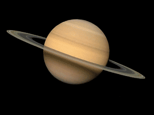

Saturn is the sixth planet from the Sun, with the largest planetary rings in the Solar System. It is the second-largest planet after Jupiter, and recently, with many other moons being discovered, it surpassed the number of Jupiter’s moons and is now considered the planet with the most numerous satellites.
Keys Facts & Summary
- Since ancient times Saturn was known to humanity because of its brightness and closeness to Earth. It’s not possible to give someone credit for the discovery of Saturn, however, the first telescopic observation was conducted by Galileo Galilei in 1610.
- Because of the crude telescope available at the time, Galileo failed to observe the rings of Saturn. The discovery of the rings was made by Christiaan Huygens in 1659.
- Saturn is named after the Roman god of harvest and time, the equivalent of the Greek god of time, Cronos.
- The ring system of Saturn can extend up to 282.000 km / 175.000 mi from the planet. The rings of Saturn together with the planet itself can fit in the distance between the Earth and the Moon..
- Saturn is the second-largest planet of the Solar System, second only to Jupiter, having a radius of 58.232 km or 36.183 mi, about nine times that of Earth.
- It has a diameter of 120.536 km or 74.897 mi, almost 9.5 times bigger than the diameter of Earth and a surface area about 83 times greater.
Saturn
Saturn - also nicknamed the “Ringed Planet” – has been observed since ancient times by different cultures around the world. Because of this, no one can be credited with first discovering the planet. Though it is the most distant of the visible planets, it still can be seen with the naked eye.

The first telescopic observation was conducted by Galileo Galilei in 1610. Because of the crude telescope available at the time, Galileo failed to observe the rings of Saturn. He thought that the planet was surrounded very closely by two moons but when he looked again, the objects disappeared. After a couple of years, observations made by Christiaan Huygens in 1659, elucidated the mystery, concluding that in fact, the objects were a ring system surrounding Saturn.
Because of the planet’s slow orbit around the sun, it was associated with time, and due to its golden-like glow, it was also associated with wealth. It was thus named after the Roman god of wealth and agriculture Saturn, which is the equivalent of the Greek god of time, Cronos.
Formation
Saturn formed together with the rest of the solar system about 4.5 billion years ago. Gravity pulled swirling gas and dust together and thus the gas giant was created. About 4 billion years ago, Saturn settled into its current position in the outer solar system. Like Jupiter, Saturn is mostly made of hydrogen and helium, the same two main components that make up the Sun.
Distance, Size and Mass
Saturn is about 9.5 times farther away from the Sun than Earth. At a distance of 9.6 AU away from the Sun and 10.6 AU away from Earth, it is the sixth most distant planet.

Though the volume of Saturn is about 764 times that of Earth, it is the least dense planet in the solar system. Earth is 8 times denser than Saturn, and if it would have a surface, the gravity would be similar. The density of Saturn has been estimated to be about 0.687 g/cm3, less dense than water due to its gaseous composition.
Orbit and Rotation
Saturn has the second-shortest day in the solar system, completing a rotation quite quickly, in about 10.6 hours. However, its orbit around the Sun is slow, completing one trip around the Sun or a year, in about 29.5 Earth years. Its average orbital speed is about 9.68 km/s - 6.01 mi/s.

Picture of Planet Saturn
Quick Facts
| First Record: | 8th Century BC |
| Surface Temperature: | -139°C |
| Orbit Period: | (29.45 Earth years) |
| Orbit Distance: | 1,426,666,422 km (9.58 AU) |
| Notable Moons: | Titan, Rhea & Enceladus |
| Known Moons: | 62 |
| Equatorial Circumference: | 365,882 km |
| Polar Diameter: | 108,728 km |
| Equatorial Diameter: | 120,536 km |
| Mass: | 568,319,000,000,000,000 billion kg |